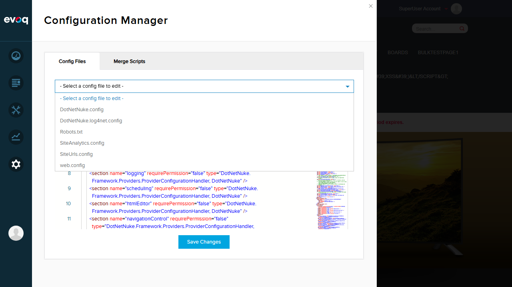
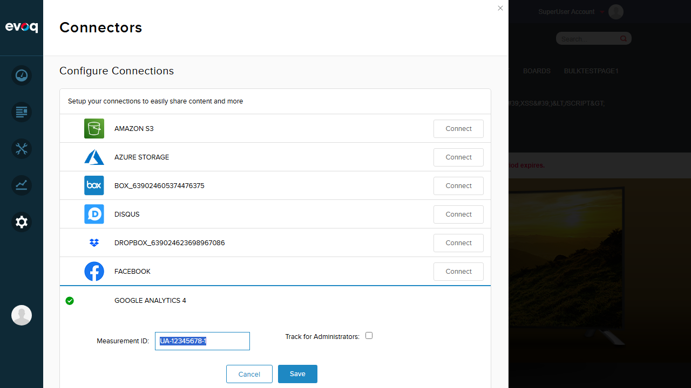

Test Report: Cookie Management for Analytics
Extension: Evoq.GoogleAnalyticsConnector (Connector)
Feature: Cookie Management for Analytics
Priority: High
Test Date: January 6, 2026
Tester: Automated Test Suite
Feature Description
Manages visitor ID and session cookies for tracking unique visitors and sessions across the site.
UI Location: Browser cookies (Analytics_VisitorId, Analytics, SessionId)
Relevant Files:
- Evoq Content/Library/Components/Analytics/AnalyticsCookieHelper.cs
- Evoq Content/Library/Components/Analytics/AnalyticsController.cs
Test Summary
6
Not Testable (See Observations)
Critical Finding
Legacy Analytics Cookies are DISABLED by Default
The cookie management feature exists in code but is disabled by default because the required web.config setting EnableLegacyAnalyticsCookies is not present. Without this setting set to true, the system intentionally expires cookies immediately rather than creating them.
Code Analysis
From AnalyticsController.cs lines 193-198:
private static bool AreLegacyAnalyticsCookiesEnabled()
{
var configValue = Config.GetSetting("EnableLegacyAnalyticsCookies");
return !string.IsNullOrEmpty(configValue) && Convert.ToBoolean(configValue);
}
Cookie creation behavior (lines 133-146):
- Analytics_VisitorId cookie: Expires in 30 days if enabled, otherwise expires immediately
- Analytics cookie: Expires based on
Analytics_SessionTimeOut portal setting (default 60 min) if enabled, otherwise expires immediately
Test Results
Test 1: Verify Legacy Analytics Cookies Disabled (Default Configuration)
PASS
Objective
Verify that when EnableLegacyAnalyticsCookies is not set in web.config, the analytics cookies are not created.
Steps Taken
- Logged into DNN site as SuperUser
- Navigated to Settings > Config Manager
- Selected web.config file
- Searched for "EnableLegacyAnalyticsCookies" setting
- Verified setting is NOT present in configuration
Expected Result
The EnableLegacyAnalyticsCookies setting should not be present, indicating default disabled state.
Actual Result
Confirmed: Setting is NOT present in web.config. Grep search returned no matches.
Screenshot

Test 2: Verify No Analytics Cookies in Browser
PASS
Objective
Verify that Analytics_VisitorId and Analytics cookies are NOT present in the browser when legacy cookies are disabled.
Steps Taken
- Browsed multiple pages on the site
- Used Playwright to retrieve all browser cookies
- Filtered cookies for any containing "Analytics", "Session", or "Visitor"
- Verified no legacy analytics cookies exist
Expected Result
No Analytics_VisitorId or Analytics cookies should be present.
Actual Result
Confirmed: Zero analytics cookies found. Total 12 cookies present, none are legacy analytics cookies.
Cookies Found
| Cookie Name |
Purpose |
Analytics Related? |
| dnn_IsMobile | Mobile detection | No |
| language | Language preference | No |
| authentication.status.0 | Auth status | No |
| DNNReturnTo | Return URL | No |
| .ASPXANONYMOUS | ASP.NET anonymous ID | No |
| __RequestVerificationToken | CSRF protection | No |
| _ga | Google Analytics (external) | External GA, not DNN legacy |
| ARRAffinitySameSite | Azure load balancing | No |
| authentication | Auth type | No |
| .DOTNETNUKE | DNN auth cookie | No |
| LastPageId | Last page visited | No |
| _ga_ABC123DEF4 | Google Analytics session | External GA, not DNN legacy |
Screenshot

Additional Verification: Google Analytics Connector Settings
PASS
Objective
Verify the Google Analytics Connector UI to determine if cookie settings are configurable.
Steps Taken
- Navigated to Settings > Connectors
- Located Google Analytics 4 connector (connected status)
- Clicked Edit to view settings
- Reviewed available configuration options
Expected Result
Understand what cookie-related settings are available in the UI.
Actual Result
The Google Analytics Connector UI provides only:
- Measurement ID: Text field for GA tracking ID
- Track for Administrators: Checkbox to include/exclude admin tracking
No cookie configuration options are available in the UI. Cookie management is controlled exclusively via the EnableLegacyAnalyticsCookies web.config setting.
Screenshots


Observations
Features Found in Code But Not Testable via UI
The following scenarios from the test plan exist in code but cannot be tested via UI because the feature is disabled by default and requires web.config modification:
| Suggested Scenario |
Why Not Testable |
| Create new visitor ID cookie |
Requires EnableLegacyAnalyticsCookies=true in web.config |
| Create new session cookie |
Requires EnableLegacyAnalyticsCookies=true in web.config |
| Update existing session cookie |
Requires cookies to exist first (disabled) |
| Handle cookie expiration (30 days for visitor, configurable for session) |
Code exists but cookies are not created when disabled |
| Verify cookie paths are set correctly |
Requires cookies to exist (disabled) |
| Validate session timeout configuration |
No UI found for Analytics_SessionTimeOut portal setting |
Code Implementation Details
From code analysis, when EnableLegacyAnalyticsCookies is enabled:
- Analytics_VisitorId: GUID stored for 30 days, path set to application path or "/"
- Analytics cookie subkeys:
- SessionId - GUID for session tracking
- TabId - Current page tab ID
- ContentItemId - Current content item ID
- Session timeout: Configurable via
Analytics_SessionTimeOut portal setting (default: 60 minutes)
Cookie Removal When Analytics Disabled
The test scenario "Test cookie removal when analytics disabled" is the current default state. When EnableLegacyAnalyticsCookies is not set or set to false, the code sets cookies to expire immediately (DateTime.Now.AddMinutes(-1)), effectively removing them.
Recommendation
To fully test the cookie management functionality, the following would be required:
- Add
<add key="EnableLegacyAnalyticsCookies" value="true"/> to web.config appSettings
- Optionally configure
Analytics_SessionTimeOut portal setting for custom session duration
- Restart the application for changes to take effect
Conclusion
The Cookie Management for Analytics feature is correctly implemented in the codebase but is disabled by default for privacy compliance reasons. The feature can be enabled by adding the EnableLegacyAnalyticsCookies setting to web.config.
The two tests that could be performed with the current configuration both PASSED:
- Verified the feature is disabled by default (setting not present)
- Verified no analytics cookies are created when disabled